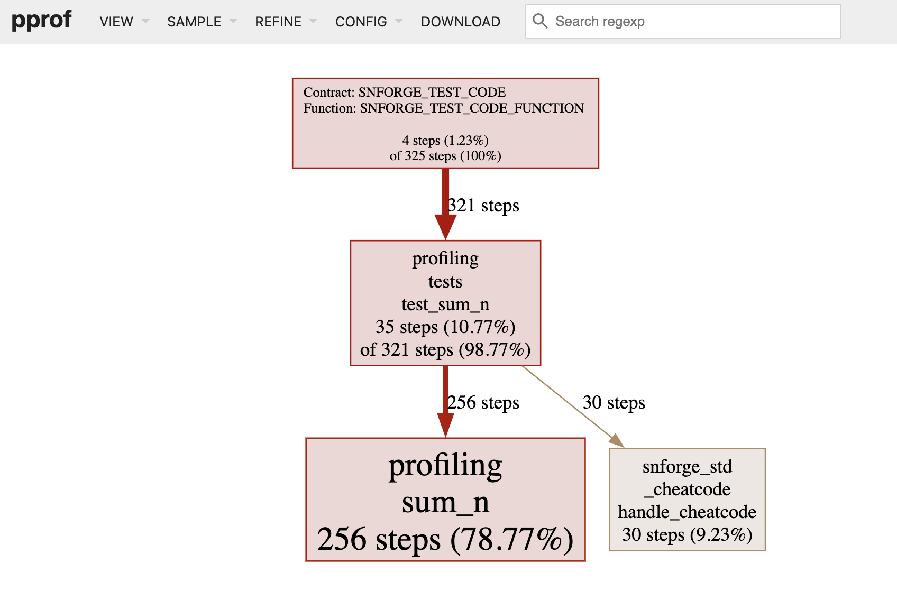

How To Write Tests
The Anatomy of a Test Function
Tests are Cairo functions that verify that the non-test code is functioning in the expected manner. The bodies of test functions typically perform these three actions:
- Set up any needed data or state.
- Run the code you want to test.
- Assert the results are what you expect.
Let’s look at the features Cairo provides for writing tests that take these actions, which include:
#[test]attribute.assert!macro.assert_eq!,assert_ne!,assert_lt!,assert_le!,assert_gt!andassert_ge!macros. In order to use them, you will need to addassert_macros = "2.8.2"as a dev dependency.#[should_panic]attribute.
Note: Make sure to select Starknet Foundry as a test runner when creating your project.
The Anatomy of a Test Function
At its simplest, a test in Cairo is a function that’s annotated with the
#[test] attribute. Attributes are metadata about pieces of Cairo code; one
example is the #[derive()] attribute we used with structs in Chapter
{{#chap using-structs-to-structure-related-data}}. To change a
function into a test function, add #[test] on the line before fn. When you
run your tests with the scarb test command, Scarb runs Starknet Foundry’s test
runner binary that runs the annotated functions and reports on whether each test
function passes or fails.
Let’s create a new project called adder using Scarb with the command
scarb new adder. Remove the tests folder.
adder
├── Scarb.toml
└── src
└── lib.cairo
In lib.cairo, let’s remove the existing content and add a tests module
containing the first test, as shown in Listing {{#ref first-test}}.
Filename: src/lib.cairo
pub fn add(left: usize, right: usize) -> usize {
left + right
}
#[cfg(test)]
mod tests {
use super::*;
#[test]
fn it_works() {
let result = add(2, 2);
assert_eq!(result, 4);
}
}
{{#label first-test}} Listing {{#ref first-test}}: A simple test function
Note the #[test] annotation: this attribute indicates this is a test function,
so the test runner knows to treat this function as a test. We might also have
non-test functions to help set up common scenarios or perform common operations,
so we always need to indicate which functions are tests.
We use the #[cfg(test)] attribute for the tests module, so that the compiler
knows the code it contains needs to be compiled only when running tests. This is
actually not an option: if you put a simple test with the #[test] attribute in
a lib.cairo file, it will not compile. We will talk more about the
#[cfg(test)] attribute in the next Test Organization
section.
The example function body uses the assert_eq! macro, which contains the result
of adding 2 and 2, which equals 4. This assertion serves as an example of the
format for a typical test. We’ll explain in more detail how assert_eq! works
later in this chapter. Let’s run it to see that this test passes.
The scarb test command runs all tests found in our project, and shows the
following output:
$ scarb test
Running test listing_10_01 (snforge test)
Blocking waiting for file lock on registry db cache
Blocking waiting for file lock on registry db cache
Compiling test(listing_10_01_unittest) listing_10_01 v0.1.0 (listings/ch10-testing-cairo-programs/listing_10_01/Scarb.toml)
Finished `dev` profile target(s) in 1 second
Collected 2 test(s) from listing_10_01 package
Running 2 test(s) from src/
[PASS] listing_10_01::other_tests::exploration (l1_gas: ~0, l1_data_gas: ~0, l2_gas: ~15240)
[PASS] listing_10_01::tests::it_works (l1_gas: ~0, l1_data_gas: ~0, l2_gas: ~13840)
Tests: 2 passed, 0 failed, 0 ignored, 0 filtered out
scarb test compiled and ran the test. We see the line
Collected 1 test(s) from adder package followed by the line
Running 1 test(s) from src/. The next line shows the name of the test
function, called it_works, and that the result of running that test is ok.
The test runner also provides an estimation of the gas consumption. The overall
summary shows that all the tests passed, and the portion that reads
1 passed; 0 failed totals the number of tests that passed or failed.
It’s possible to mark a test as ignored so it doesn’t run in a particular
instance; we’ll cover that in the
Ignoring Some Tests Unless Specifically Requested
section later in this chapter. Because we haven’t done that here, the summary
shows 0 ignored. We can also pass an argument to the scarb test command to
run only a test whose name matches a string; this is called filtering and we’ll
cover that in the Running Single Tests section. Since
we haven’t filtered the tests being run, the end of the summary shows
0 filtered out.
Let’s start to customize the test to our own needs. First change the name of the
it_works function to a different name, such as exploration, like so:
#[test]
fn exploration() {
let result = 2 + 2;
assert_eq!(result, 4);
}
Then run scarb test again. The output now shows exploration instead of
it_works:
$ scarb test
Running test listing_10_01 (snforge test)
Blocking waiting for file lock on registry db cache
Blocking waiting for file lock on registry db cache
Compiling test(listing_10_01_unittest) listing_10_01 v0.1.0 (listings/ch10-testing-cairo-programs/listing_10_01/Scarb.toml)
Finished `dev` profile target(s) in 1 second
Collected 2 test(s) from listing_10_01 package
Running 2 test(s) from src/
[PASS] listing_10_01::other_tests::exploration (l1_gas: ~0, l1_data_gas: ~0, l2_gas: ~15240)
[PASS] listing_10_01::tests::it_works (l1_gas: ~0, l1_data_gas: ~0, l2_gas: ~13840)
Tests: 2 passed, 0 failed, 0 ignored, 0 filtered out
Now we’ll add another test, but this time we’ll make a test that fails! Tests
fail when something in the test function panics. Each test is run in a new
thread, and when the main thread sees that a test thread has died, the test is
marked as failed. Enter the new test as a function named another, so your
src/lib.cairo file looks like in Listing {{#ref second-test}}.
Filename: src/lib.cairo
#[cfg(test)]
mod tests {
#[test]
fn exploration() {
let result = 2 + 2;
assert_eq!(result, 4);
}
#[test]
fn another() {
let result = 2 + 2;
assert!(result == 6, "Make this test fail");
}
}
{{#label second-test}} Listing {{#ref second-test}}: Adding a second test in lib.cairo that will fail
Run scarb test and you will see the following output:
Collected 2 test(s) from adder package
Running 2 test(s) from src/
[FAIL] adder::tests::another
Failure data:
"Make this test fail"
[PASS] adder::tests::exploration (gas: ~1)
Tests: 1 passed, 1 failed, 0 skipped, 0 ignored, 0 filtered out
Failures:
adder::tests::another
Instead of [PASS], the line adder::tests::another shows [FAIL]. A new
section appears between the individual results and the summary. It displays the
detailed reason for each test failure. In this case, we get the details that
another failed because it panicked with "Make this test fail" error.
After that, the summary line is displayed: we had one test pass and one test fail. At the end, we see a list of the failing tests.
Now that you’ve seen what the test results look like in different scenarios, let’s look at some functions that are useful in tests.
Checking Results with the assert! Macro
The assert! macro, provided by Cairo, is useful when you want to ensure that
some condition in a test evaluates to true. We give the assert! macro the
first argument that evaluates to a boolean. If the value is true, nothing
happens and the test passes. If the value is false, the assert! macro calls
panic() to cause the test to fail with a message we defined as the second
argument. Using the assert! macro helps us check that our code is functioning
in the way we intended.
Remember in Chapter
{{#chap using-structs-to-structure-related-data}}, we used a
Rectangle struct and a can_hold method, which are repeated here in Listing
{{#ref rectangle}}. Let’s put this code in the src/lib.cairo file, then write
some tests for it using the assert! macro.
Filename: src/lib.cairo
#[derive(Drop)]
struct Rectangle {
width: u64,
height: u64,
}
trait RectangleTrait {
fn can_hold(self: @Rectangle, other: @Rectangle) -> bool;
}
impl RectangleImpl of RectangleTrait {
fn can_hold(self: @Rectangle, other: @Rectangle) -> bool {
*self.width > *other.width && *self.height > *other.height
}
}
{{#label rectangle}} Listing {{#ref rectangle}}: Using the
Rectangle struct and its can_hold method from Chapter
{{#chap using-structs-to-structure-related-data}}
The can_hold method returns a bool, which means it’s a perfect use case for
the assert! macro. We can write a test that exercises the can_hold method by
creating a Rectangle instance that has a width of 8 and a height of 7 and
asserting that it can hold another Rectangle instance that has a width of 5
and a height of 1.
#[derive(Drop)]
struct Rectangle {
width: u64,
height: u64,
}
trait RectangleTrait {
fn can_hold(self: @Rectangle, other: @Rectangle) -> bool;
}
impl RectangleImpl of RectangleTrait {
fn can_hold(self: @Rectangle, other: @Rectangle) -> bool {
*self.width > *other.width && *self.height > *other.height
}
}
#[cfg(test)]
mod tests {
use super::*;
#[test]
fn larger_can_hold_smaller() {
let larger = Rectangle { height: 7, width: 8 };
let smaller = Rectangle { height: 1, width: 5 };
assert!(larger.can_hold(@smaller), "rectangle cannot hold");
}
}
#[cfg(test)]
mod tests2 {
use super::*;
#[test]
fn smaller_cannot_hold_larger() {
let larger = Rectangle { height: 7, width: 8 };
let smaller = Rectangle { height: 1, width: 5 };
assert!(!smaller.can_hold(@larger), "rectangle cannot hold");
}
}
Note the use super::*; line inside the tests module. The tests module is a
regular module that follows the usual visibility rules we covered in Chapter
{{#chap paths-for-referring-to-an-item-in-the-module-tree}} in the “Paths for
Referring to an Item in the Module
Tree”
section. Because the tests module is an inner module, we need to bring the
code under test in the outer module into the scope of the inner module. We use a
glob here, so anything we define in the outer module is available to this
tests module.
We’ve named our test larger_can_hold_smaller, and we’ve created the two
Rectangle instances that we need. Then we called the assert! macro and
passed it the result of calling larger.can_hold(@smaller). This expression is
supposed to return true, so our test should pass. Let’s find out!
$ scarb test
Running test listing_10_03 (snforge test)
Blocking waiting for file lock on registry db cache
Blocking waiting for file lock on registry db cache
Compiling test(listing_10_03_unittest) listing_10_03 v0.1.0 (listings/ch10-testing-cairo-programs/listing_10_03/Scarb.toml)
Finished `dev` profile target(s) in 1 second
Collected 2 test(s) from listing_10_03 package
Running 2 test(s) from src/
[PASS] listing_10_03::tests2::smaller_cannot_hold_larger (l1_gas: ~0, l1_data_gas: ~0, l2_gas: ~13840)
[PASS] listing_10_03::tests::larger_can_hold_smaller (l1_gas: ~0, l1_data_gas: ~0, l2_gas: ~13840)
Tests: 2 passed, 0 failed, 0 ignored, 0 filtered out
It does pass! Let’s add another test, this time asserting that a smaller rectangle cannot hold a larger rectangle:
Filename: src/lib.cairo
#[derive(Drop)]
struct Rectangle {
width: u64,
height: u64,
}
trait RectangleTrait {
fn can_hold(self: @Rectangle, other: @Rectangle) -> bool;
}
impl RectangleImpl of RectangleTrait {
fn can_hold(self: @Rectangle, other: @Rectangle) -> bool {
*self.width > *other.width && *self.height > *other.height
}
}
#[cfg(test)]
mod tests {
use super::*;
#[test]
fn larger_can_hold_smaller() {
let larger = Rectangle { height: 7, width: 8 };
let smaller = Rectangle { height: 1, width: 5 };
assert!(larger.can_hold(@smaller), "rectangle cannot hold");
}
}
#[cfg(test)]
mod tests2 {
use super::*;
#[test]
fn smaller_cannot_hold_larger() {
let larger = Rectangle { height: 7, width: 8 };
let smaller = Rectangle { height: 1, width: 5 };
assert!(!smaller.can_hold(@larger), "rectangle cannot hold");
}
}
{{#label another-test}} Listing {{#ref another-test}}: Adding another test in lib.cairo that will pass
Because the correct result of the can_hold method, in this case, is false,
we need to negate that result before we pass it to the assert! macro. As a
result, our test will pass if can_hold returns false:
$ scarb test
Running test listing_10_03 (snforge test)
Blocking waiting for file lock on registry db cache
Blocking waiting for file lock on registry db cache
Compiling test(listing_10_03_unittest) listing_10_03 v0.1.0 (listings/ch10-testing-cairo-programs/listing_10_03/Scarb.toml)
Finished `dev` profile target(s) in 1 second
Collected 2 test(s) from listing_10_03 package
Running 2 test(s) from src/
[PASS] listing_10_03::tests2::smaller_cannot_hold_larger (l1_gas: ~0, l1_data_gas: ~0, l2_gas: ~13840)
[PASS] listing_10_03::tests::larger_can_hold_smaller (l1_gas: ~0, l1_data_gas: ~0, l2_gas: ~13840)
Tests: 2 passed, 0 failed, 0 ignored, 0 filtered out
Two tests that pass! Now let’s see what happens to our test results when we
introduce a bug in our code. We’ll change the implementation of the can_hold
method by replacing the > sign with a < sign when it compares the widths:
impl RectangleImpl of RectangleTrait {
fn can_hold(self: @Rectangle, other: @Rectangle) -> bool {
*self.width < *other.width && *self.height > *other.height
}
}
Running the tests now produces the following:
$ scarb test
Running test no_listing_01_wrong_can_hold_impl (snforge test)
Blocking waiting for file lock on registry db cache
Blocking waiting for file lock on registry db cache
Compiling test(no_listing_01_wrong_can_hold_impl_unittest) no_listing_01_wrong_can_hold_impl v0.1.0 (listings/ch10-testing-cairo-programs/no_listing_01_wrong_can_hold_impl/Scarb.toml)
Finished `dev` profile target(s) in 1 second
Collected 2 test(s) from no_listing_01_wrong_can_hold_impl package
Running 2 test(s) from src/
[PASS] no_listing_01_wrong_can_hold_impl::tests2::smaller_cannot_hold_larger (l1_gas: ~0, l1_data_gas: ~0, l2_gas: ~13840)
[FAIL] no_listing_01_wrong_can_hold_impl::tests::larger_can_hold_smaller
Failure data:
"rectangle cannot hold"
Tests: 1 passed, 1 failed, 0 ignored, 0 filtered out
Failures:
no_listing_01_wrong_can_hold_impl::tests::larger_can_hold_smaller
Our tests caught the bug! Because larger.width is 8 and smaller.width is
5, the comparison of the widths in can_hold now returns false (8 is not
less than 5) in the larger_can_hold_smaller test. Notice that the
smaller_cannot_hold_larger test still passes: to make this test fail, the
height comparison should also be modified in can_hold method, replacing the
> sign with a < sign.
Testing Equality and Comparisons with the assert_xx! Macros
assert_eq! and assert_ne! Macros
A common way to verify functionality is to test for equality between the result
of the code under test and the value you expect the code to return. You could do
this using the assert! macro and passing it an expression using the ==
operator. However, this is such a common test that the standard library provides
a pair of macros — assert_eq! and assert_ne! — to perform this test more
conveniently. These macros compare two arguments for equality or inequality,
respectively. They’ll also print the two values if the assertion fails, which
makes it easier to see why the test failed; conversely, the assert! macro
only indicates that it got a false value for the == expression, without
printing the values that led to the false value.
In Listing {{#ref add_two}}, we write a function named add_two that adds 2
to its parameter, then we test this function using assert_eq! and assert_ne!
macros.
Filename: src/lib.cairo
pub fn add_two(a: u32) -> u32 {
a + 2
}
#[cfg(test)]
mod tests {
use super::*;
#[test]
fn it_adds_two() {
assert_eq!(4, add_two(2));
}
#[test]
fn wrong_check() {
assert_ne!(0, add_two(2));
}
}
{{#label add_two}} Listing {{#ref add_two}}: Testing the
function add_two using assert_eq! and assert_ne! macros
Let’s check that it passes!
$ scarb test
Running test listing_10_04 (snforge test)
Blocking waiting for file lock on registry db cache
Compiling test(listing_10_04_unittest) listing_10_04 v0.1.0 (listings/ch10-testing-cairo-programs/listing_10_04/Scarb.toml)
Finished `dev` profile target(s) in 1 second
Collected 2 test(s) from listing_10_04 package
Running 2 test(s) from src/
[PASS] listing_10_04::tests::it_adds_two (l1_gas: ~0, l1_data_gas: ~0, l2_gas: ~13840)
[PASS] listing_10_04::tests::wrong_check (l1_gas: ~0, l1_data_gas: ~0, l2_gas: ~15040)
Tests: 2 passed, 0 failed, 0 ignored, 0 filtered out
In the it_adds_two test, we pass 4 as argument to assert_eq! macro, which
is equal to the result of calling add_two(2). The line for this test is
[PASS] adder::tests::it_adds_two (gas: ~1).
In the wrong_check test, we pass 0 as argument to assert_ne! macro, which
is not equal to the result of calling add_two(2). Tests that use the
assert_ne! macro will pass if the two values we give it are not equal and
fail if they’re equal. This macro is most useful for cases when we’re not sure
what a value will be, but we know what the value definitely shouldn’t be.
For example, if we’re testing a function that is guaranteed to change its input
in some way, but how the input is changed depends on the day of the week that we
run our tests, the best thing to assert might be that the output of the function
is not equal to the input.
Let’s introduce a bug into our code to see what assert_eq! looks like when it
fails. Change the implementation of the add_two function to instead add 3:
pub fn add_two(a: u32) -> u32 {
a + 3
}
Run the tests again:
$ scarb test
Running test listing_10_04_wong_add (snforge test)
Blocking waiting for file lock on registry db cache
Compiling test(listing_10_04_wong_add_unittest) listing_10_04_wong_add v0.1.0 (listings/ch10-testing-cairo-programs/listing_10_04_wong_add/Scarb.toml)
Finished `dev` profile target(s) in 1 second
Collected 1 test(s) from listing_10_04_wong_add package
Running 1 test(s) from src/
[FAIL] listing_10_04_wong_add::tests::it_adds_two
Failure data:
"assertion `4 == add_two(2)` failed.
4: 4
add_two(2): 5"
Tests: 0 passed, 1 failed, 0 ignored, 0 filtered out
Failures:
listing_10_04_wong_add::tests::it_adds_two
Our test caught the bug! The it_adds_two test failed with the following
message: "assertion `4 == add_two(2)` failed. It tells us that the assertion
that failed was "assertion `left == right` failed and the left and
right values are printed on the next lines as left: left_value and
right: right_value. This helps us start debugging: the left argument was 4
but the right argument, where we had add_two(2), was 5. You can imagine
that this would be especially helpful when we have a lot of tests going on.
Note that in some languages and test frameworks, the parameters for equality
assertion functions are called expected and actual, and the order in which
we specify the arguments matters. However, in Cairo, they’re called left and
right, and the order in which we specify the value we expect and the value the
code produces doesn’t matter. We could write the assertion in this test as
assert_eq!(add_two(2), 4), which would result in the same failure message that
displays assertion failed: `(left == right)`.
Here is a simple example comparing two structs, showing how to use assert_eq!
and assert_ne! macros:
#[derive(Drop, Debug, PartialEq)]
struct MyStruct {
var1: u8,
var2: u8,
}
#[cfg(test)]
#[test]
fn test_struct_equality() {
let first = MyStruct { var1: 1, var2: 2 };
let second = MyStruct { var1: 1, var2: 2 };
let third = MyStruct { var1: 1, var2: 3 };
assert_eq!(first, second);
assert_eq!(first, second, "{:?},{:?} should be equal", first, second);
assert_ne!(first, third);
assert_ne!(first, third, "{:?},{:?} should not be equal", first, third);
}
Under the surface, assert_eq! and assert_ne! macros use the operators ==
and !=, respectively. They both take snapshots of values as arguments. When
the assertions fail, these macros print their arguments using debug formatting
({:?} syntax), which means the values being compared must implement
PartialEq and Debug traits. All primitive types and most of the core library
types implement these traits. For structs and enums that you define yourself,
you’ll need to implement PartialEq to assert equality of those types. You’ll
also need to implement Debug to print the values when the assertion fails.
Because both traits are derivable, this is usually as straightforward as adding
the #[derive(Drop, Debug, PartialEq)] annotation to your struct or enum
definition. See Appendix C for more details about these and
other derivable traits.
assert_lt!, assert_le!, assert_gt! and assert_ge! Macros
Comparisons in tests can be done using the assert_xx! macros:
assert_lt!checks if a given value is lower than another value, and reverts otherwise.assert_le!checks if a given value is lower or equal than another value, and reverts otherwise.assert_gt!checks if a given value is greater than another value, and reverts otherwise.assert_ge!checks if a given value is greater or equal than another value, and reverts otherwise.
Listing {{#ref assert_macros}} demonstrates how to use these macros:
#[derive(Drop, Copy, Debug, PartialEq)]
struct Dice {
number: u8,
}
impl DicePartialOrd of PartialOrd<Dice> {
fn lt(lhs: Dice, rhs: Dice) -> bool {
lhs.number < rhs.number
}
fn le(lhs: Dice, rhs: Dice) -> bool {
lhs.number <= rhs.number
}
fn gt(lhs: Dice, rhs: Dice) -> bool {
lhs.number > rhs.number
}
fn ge(lhs: Dice, rhs: Dice) -> bool {
lhs.number >= rhs.number
}
}
#[cfg(test)]
#[test]
fn test_struct_equality() {
let first_throw = Dice { number: 5 };
let second_throw = Dice { number: 2 };
let third_throw = Dice { number: 6 };
let fourth_throw = Dice { number: 5 };
assert_gt!(first_throw, second_throw);
assert_ge!(first_throw, fourth_throw);
assert_lt!(second_throw, third_throw);
assert_le!(
first_throw, fourth_throw, "{:?},{:?} should be lower or equal", first_throw, fourth_throw,
);
}
{{#label assert_macros}} Listing {{#ref assert_macros}}:
Example of tests that use the assert_xx! macros for comparisons
In this example, we roll a Dice struct multiple times and compare the results.
We need to manually implement the PartialOrd trait for our struct so that we
can compare Dice instances with lt, le, gt and ge functions, which are
used by assert_lt!, assert_le!, assert_gt! and assert_ge! macros,
respectively. We also need to derive the Copy trait on our Dice struct to
use the instantiated structs multiple times, as the comparison functions take
ownership of the variables.
Adding Custom Failure Messages
You can also add a custom message to be printed with the failure message as
optional arguments to assert!, assert_eq!, and assert_ne! macros. Any
arguments specified after the required arguments are passed along to the
format! macro (discussed in the Printing chapter), so you can
pass a format string that contains {} placeholders and values to go in those
placeholders. Custom messages are useful for documenting what an assertion
means; when a test fails, you’ll have a better idea of what the problem is with
the code.
Let’s add a custom failure message composed of a format string with a
placeholder filled in with the actual value we got from the previous add_two
function:
#[test]
fn it_adds_two() {
assert_eq!(4, add_two(2), "Expected {}, got add_two(2)={}", 4, add_two(2));
}
Now when we run the test, we’ll get a more informative error message:
$ scarb test
Running test no_listing_02_custom_messages (snforge test)
Compiling test(no_listing_02_custom_messages_unittest) no_listing_02_custom_messages v0.1.0 (listings/ch10-testing-cairo-programs/no_listing_02_custom_messages/Scarb.toml)
Finished `dev` profile target(s) in 1 second
Collected 1 test(s) from no_listing_02_custom_messages package
Running 1 test(s) from src/
[FAIL] no_listing_02_custom_messages::tests::it_adds_two
Failure data:
"assertion `4 == add_two(2)` failed: Expected 4, got add_two(2)=5
4: 4
add_two(2): 5"
Tests: 0 passed, 1 failed, 0 ignored, 0 filtered out
Failures:
no_listing_02_custom_messages::tests::it_adds_two
We can see the value we actually got in the test output, which would help us debug what happened instead of what we were expecting to happen.
Checking for panics with should_panic
In addition to checking return values, it’s important to check that our code
handles error conditions as we expect. For example, consider the Guess type in
Listing {{#ref guess}}:
Filename: src/lib.cairo
#[derive(Drop)]
struct Guess {
value: u64,
}
pub trait GuessTrait {
fn new(value: u64) -> Guess;
}
impl GuessImpl of GuessTrait {
fn new(value: u64) -> Guess {
if value < 1 || value > 100 {
panic!("Guess must be >= 1 and <= 100");
}
Guess { value }
}
}
{{#label guess}} Listing {{#ref guess}}: Guess struct
and its new method
Other code that uses Guess depends on the guarantee that Guess instances
will contain only values between 1 and 100. We can write a test that ensures
that attempting to create a Guess instance with a value outside that range
panics.
We do this by adding the attribute should_panic to our test function. The test
passes if the code inside the function panics; the test fails if the code inside
the function doesn’t panic.
#[cfg(test)]
mod tests {
use super::*;
#[test]
#[should_panic]
fn greater_than_100() {
GuessTrait::new(200);
}
}
We place the #[should_panic] attribute after the #[test] attribute and
before the test function it applies to. Let’s look at the result to see that
this test passes:
$ scarb test
Running test listing_09_08 (snforge test)
Blocking waiting for file lock on registry db cache
Blocking waiting for file lock on registry db cache
Compiling test(listing_09_08_unittest) listing_09_08 v0.1.0 (listings/ch10-testing-cairo-programs/listing_10_05/Scarb.toml)
Finished `dev` profile target(s) in 1 second
Collected 1 test(s) from listing_09_08 package
Running 1 test(s) from src/
[PASS] listing_09_08::tests::greater_than_100 (l1_gas: ~0, l1_data_gas: ~0, l2_gas: ~14440)
Tests: 1 passed, 0 failed, 0 ignored, 0 filtered out
Looks good! Now let’s introduce a bug in our code by removing the condition that
the new function will panic if the value is greater than 100:
// TAG: tests_fail
#[derive(Drop)]
struct Guess {
value: u64,
}
trait GuessTrait {
fn new(value: u64) -> Guess;
}
impl GuessImpl of GuessTrait {
fn new(value: u64) -> Guess {
if value < 1 {
panic!("Guess must be >= 1 and <= 100");
}
Guess { value }
}
}
#[cfg(test)]
mod tests {
use super::*;
#[test]
#[should_panic]
fn greater_than_100() {
GuessTrait::new(200);
}
}
When we run the test, it will fail:
$ scarb test
Running test no_listing_03_wrong_new_impl (snforge test)
Blocking waiting for file lock on registry db cache
Compiling test(no_listing_03_wrong_new_impl_unittest) no_listing_03_wrong_new_impl v0.1.0 (listings/ch10-testing-cairo-programs/no_listing_03_wrong_new_impl/Scarb.toml)
Finished `dev` profile target(s) in 1 second
Collected 1 test(s) from no_listing_03_wrong_new_impl package
Running 1 test(s) from src/
[FAIL] no_listing_03_wrong_new_impl::tests::greater_than_100
Failure data:
Expected to panic, but no panic occurred
Tests: 0 passed, 1 failed, 0 ignored, 0 filtered out
Failures:
no_listing_03_wrong_new_impl::tests::greater_than_100
We don’t get a very helpful message in this case, but when we look at the test
function, we see that it’s annotated with #[should_panic] attribute. The
failure we got means that the code in the test function did not cause a panic.
Tests that use should_panic can be imprecise. A should_panic test would pass
even if the test panics for a different reason from the one we were expecting.
To make should_panic tests more precise, we can add an optional expected
parameter to the #[should_panic] attribute. The test harness will make sure
that the failure message contains the provided text. For example, consider the
modified code for GuessImpl in Listing {{#ref guess-2}} where the new
function panics with different messages depending on whether the value is too
small or too large:
Filename: src/lib.cairo
#[derive(Drop)]
struct Guess {
value: u64,
}
trait GuessTrait {
fn new(value: u64) -> Guess;
}
impl GuessImpl of GuessTrait {
fn new(value: u64) -> Guess {
if value < 1 {
panic!("Guess must be >= 1");
} else if value > 100 {
panic!("Guess must be <= 100");
}
Guess { value }
}
}
#[cfg(test)]
mod tests {
use super::*;
#[test]
#[should_panic(expected: "Guess must be <= 100")]
fn greater_than_100() {
GuessTrait::new(200);
}
}
{{#label guess-2}} Listing {{#ref guess-2}}: new
implementation that panics with different error messages
The test will pass because the value we put in the should_panic attribute’s
expected parameter is the string that the Guess::new method panics with. We
need to specify the entire panic message that we expect.
To see what happens when a should_panic test with an expected message fails,
let’s again introduce a bug into our code by swapping the bodies of the
if value < 1 and the else if value > 100 blocks:
impl GuessImpl of GuessTrait {
fn new(value: u64) -> Guess {
if value < 1 {
panic!("Guess must be <= 100");
} else if value > 100 {
panic!("Guess must be >= 1");
}
Guess { value }
}
}
#[cfg(test)]
mod tests {
use super::*;
#[test]
#[should_panic(expected: "Guess must be <= 100")]
fn greater_than_100() {
GuessTrait::new(200);
}
}
This time when we run the should_panic test, it will fail:
$ scarb test
Running test no_listing_04_new_bug (snforge test)
Blocking waiting for file lock on registry db cache
Compiling test(no_listing_04_new_bug_unittest) no_listing_04_new_bug v0.1.0 (listings/ch10-testing-cairo-programs/no_listing_04_new_bug/Scarb.toml)
Finished `dev` profile target(s) in 1 second
Collected 1 test(s) from no_listing_04_new_bug package
Running 1 test(s) from src/
[FAIL] no_listing_04_new_bug::tests::greater_than_100
Failure data:
Incorrect panic data
Actual: [0x46a6158a16a947e5916b2a2ca68501a45e93d7110e81aa2d6438b1c57c879a3, 0x0, 0x4775657373206d757374206265203e3d2031, 0x12] (Guess must be >= 1)
Expected: [0x46a6158a16a947e5916b2a2ca68501a45e93d7110e81aa2d6438b1c57c879a3, 0x0, 0x4775657373206d757374206265203c3d20313030, 0x14] (Guess must be <= 100)
Tests: 0 passed, 1 failed, 0 ignored, 0 filtered out
Failures:
no_listing_04_new_bug::tests::greater_than_100
The failure message indicates that this test did indeed panic as we expected,
but the panic message did not include the expected string. The panic message
that we did get in this case was Guess must be >= 1. Now we can start figuring
out where our bug is!
Running Single Tests
Sometimes, running a full test suite can take a long time. If you’re working on
code in a particular area, you might want to run only the tests pertaining to
that code. You can choose which tests to run by passing scarb test the name of
the test you want to run as an argument.
To demonstrate how to run a single test, we’ll first create two test functions, as shown in Listing {{#ref two-tests}}, and choose which ones to run.
Filename: src/lib.cairo
#[cfg(test)]
mod tests {
#[test]
fn add_two_and_two() {
let result = 2 + 2;
assert_eq!(result, 4);
}
#[test]
fn add_three_and_two() {
let result = 3 + 2;
assert!(result == 5, "result is not 5");
}
}
{{#label two-tests}} Listing {{#ref two-tests}}: Two tests with two different names
We can pass the name of any test function to scarb test to run only that test:
$ scarb test add_two_and_two
Running test listing_10_07 (snforge test)
Compiling test(listing_10_07_unittest) listing_10_07 v0.1.0 (listings/ch10-testing-cairo-programs/listing_10_07/Scarb.toml)
Finished `dev` profile target(s) in 1 second
Collected 1 test(s) from listing_10_07 package
Running 1 test(s) from src/
[PASS] listing_10_07::tests::add_two_and_two (l1_gas: ~0, l1_data_gas: ~0, l2_gas: ~15240)
Tests: 1 passed, 0 failed, 0 ignored, 1 filtered out
Only the test with the name add_two_and_two ran; the other test didn’t match
that name. The test output lets us know we had one more test that didn’t run by
displaying 1 filtered out; at the end.
We can also specify part of a test name, and any test whose name contains that value will be run.
Ignoring Some Tests Unless Specifically Requested
Sometimes a few specific tests can be very time-consuming to execute, so you
might want to exclude them during most runs of scarb test. Rather than listing
as arguments all tests you do want to run, you can instead annotate the
time-consuming tests using the #[ignore] attribute to exclude them, as shown
here:
pub fn add(left: usize, right: usize) -> usize {
left + right
}
#[cfg(test)]
mod tests {
use super::*;
#[test]
fn it_works() {
let result = add(2, 2);
assert_eq!(result, 4);
}
#[test]
#[ignore]
fn expensive_test() { // code that takes an hour to run
}
}
After #[test] we add the #[ignore] line to the test we want to exclude. Now
when we run our tests, it_works runs, but expensive_test doesn’t:
$ scarb test
Running test no_listing_05_ignore_tests (snforge test)
Blocking waiting for file lock on registry db cache
Blocking waiting for file lock on registry db cache
Compiling test(no_listing_05_ignore_tests_unittest) no_listing_05_ignore_tests v0.1.0 (listings/ch10-testing-cairo-programs/no_listing_05_ignore_tests/Scarb.toml)
Finished `dev` profile target(s) in 1 second
Collected 2 test(s) from no_listing_05_ignore_tests package
Running 2 test(s) from src/
[IGNORE] no_listing_05_ignore_tests::tests::expensive_test
[PASS] no_listing_05_ignore_tests::tests::it_works (l1_gas: ~0, l1_data_gas: ~0, l2_gas: ~13840)
Tests: 1 passed, 0 failed, 1 ignored, 0 filtered out
The expensive_test function is listed as ignored.
When you’re at a point where it makes sense to check the results of the ignored
tests and you have time to wait for the results, you can run
scarb test --include-ignored to run all tests, whether they’re ignored or not.
Testing Recursive Functions or Loops
When testing recursive functions or loops, the test is instantiated by default
with a maximum amount of gas that it can consume. This prevents running infinite
loops or consuming too much gas, and can help you benchmark the efficiency of
your implementations. This value is assumed reasonably large enough, but you can
override it by adding the #[available_gas(<Number>)] attribute to the test
function. The following example shows how to use it:
fn sum_n(n: usize) -> usize {
let mut i = 0;
let mut sum = 0;
while i <= n {
sum += i;
i += 1;
}
sum
}
#[cfg(test)]
mod tests {
use super::*;
#[test]
#[available_gas(l2_gas: 2000000)]
fn test_sum_n() {
let result = sum_n(10);
assert!(result == 55, "result is not 55");
}
}
Benchmarking Cairo Programs
Starknet Foundry contains a profiling feature that is useful to analyze and optimize the performance of your Cairo programs.
The profiling feature generates execution traces for successful tests, which are used to create profile outputs. This allows you to benchmark specific parts of your code.
To use the profiler, you will need to:
- Install Cairo Profiler from Software Mansion.
- Install Go, Graphviz and pprof, all of them are required to visualize the generated profile output.
- Run
snforge test --build-profilecommand, which generates a trace file for each passing test, stored in the snfoundry_trace directory of your project. This command also generates the corresponding output files in the profile directory. - Run
go tool pprof -http=":8000" path/to/profile/output.pb.gzto analyse a profile. This will start a web server at the specified port.
Let’s reuse the sum_n function studied above:
fn sum_n(n: usize) -> usize {
let mut i = 0;
let mut sum = 0;
while i <= n {
sum += i;
i += 1;
}
sum
}
#[cfg(test)]
mod tests {
use super::*;
#[test]
#[available_gas(l2_gas: 2000000)]
fn test_sum_n() {
let result = sum_n(10);
assert!(result == 55, "result is not 55");
}
}
After generating the trace file and the profile output, running go tool pprof
in your project will start the web server where you can find many useful
information about the test that you ran:
-
The test includes one function call, corresponding to the call to the test function. Calling
sum_nmultiple times in the test function will still return 1 call. This is becausesnforgesimulates a contract call when executing a test. -
The
sum_nfunction execution uses 256 Cairo steps:

Other information is also available such as memory holes (i.e., unused memory cells) or builtins usage. The Cairo Profiler is under active development, and many other features will be made available in the future.
{{#quiz ../quizzes/ch10-01-how_to_write_tests.toml}}